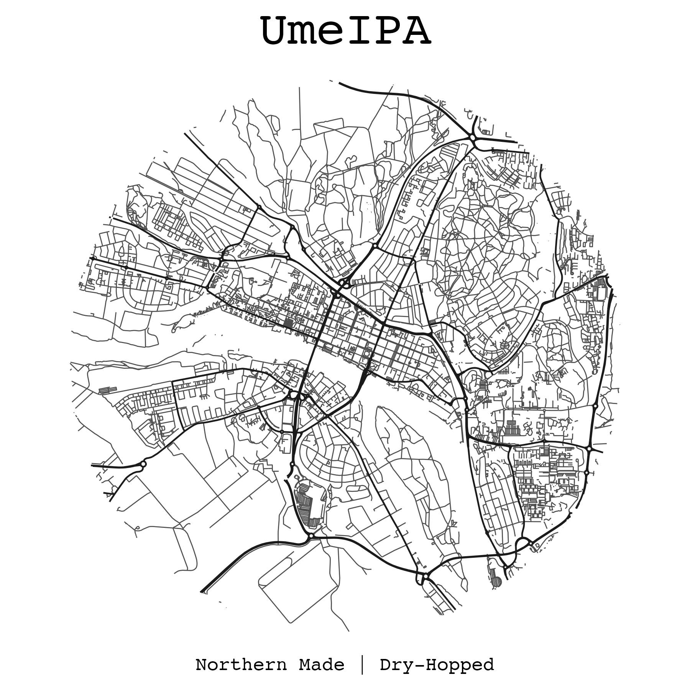
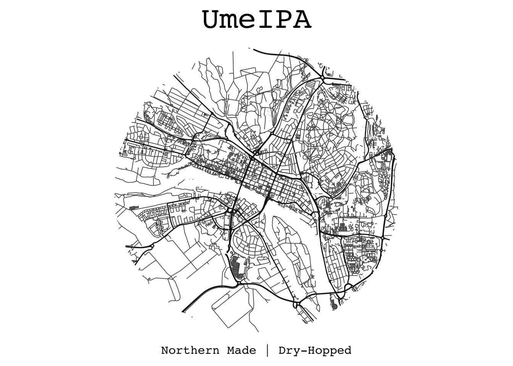

library(tidyverse) # The go-to library for basically doing anything in R nowadays
library(osmdata) # For downloading data from OpenStreetMap
library(sf) # For working with simple features, such as map stuffHello World! …and hello beer labels!
In this very first post, I want to totally rush past the part of introducing myself and instead leave that to the About page. However, while the blog will be focused on data science, occasionally other things that I find interesting will sneak in. One of these things is beer, more specifically brewing beer - and what comes along with it. I have been brewing for a few years now and to make them feel a little more like the real deal, I like to design my own labels.
In this post I’ll share some R code for creating this map-style minimalist beer label that i recently used for a batch of IPA:

Note
This is a work in progress, check back in a few days for a more polished post!
Libraries
tidyverse is the R metapackage to rule them all and includes a bunch of packages that are super useful for data wrangling. It also loads the wonderful magrittr pipe operator (%>%). osmdata is a wrapper for communicating with the Open Street Map API, and sf turns R into a geographic information system (GIS).
Features of interest
This beer label will use the road layout for the city of Umeå in the north of Sweden. osmdata has some great functions for this.
getbb()returns the bounding box (coordinates of the 4 corners of a rectangle) associated with a geographical area.opq()builds the database query.add_osm_features()adds, you’ve guessed it, our desired features to the query.osmdata_sf()Turns the results of the query intosfformat.
I’ll use highway features this time, but check Open Street Maps wiki for other features.
I’ll separate the roads and streets into two sf features to be able to draw them using different line widths on the label. The output of osmdata_sf() will contain more than we need, so we extract just the line features using purrr::pluck()
#choose area
bbx <- getbb("Umeå, Sweden")
# large roads
roads <- bbx %>%
opq() %>%
add_osm_feature(
key = "highway",
value = c("motorway", "trunk", "primary",
"secondary", "tertiary", "motorway_link",
"trunk_link", "primary_link", "secondary_link",
"tertiary_link")
) %>%
osmdata_sf() %>%
pluck("osm_lines")
# small roads
streets <- bbx %>%
opq() %>%
add_osm_feature(
key = "highway",
value = c("residential", "living_street", "service",
"unclassified", "pedestrian", "footway",
"track", "path")
) %>%
osmdata_sf() %>%
pluck("osm_lines") Plotting the label
In this case I made the map-part of the label have a circular shape, with its center being somewhere downtown Umeå. I’ll get the coordinates non-programmatically (lazy) from just right clicking in Google Maps. Google Maps and OSM use the same coordinate system and projection, so the data smoothly slips into the processing pipeline without any conversion. Happy days.
Since this is “just” a beer label, I won’t bother too much about dealing with projections - I’ll stick to WGS84/ESPG4326 which should produce good enough visual results.
# make a point that'll be the circle center
center <- c(lat = "63.82400114332574", long = "20.262895955922296")
# Buffer the point to make the actual circle
circle <- tibble(lat = center["lat"], long = center["long"]) %>%
st_as_sf(coords = c("long", "lat"), crs = 4326) %>%
st_buffer(dist = 3500, nQuadSegs = 200)Now we populate the circle with some roadage:
roads_in_circle <- st_intersection(circle, roads)
streets_in_circle <- st_intersection(circle, streets)And plot our simple beer label using ggplot2:
ggplot() +
# create the thinner streets
geom_sf(data = streets_in_circle,
linewidth = 0.3,
colour = "gray30") +
# create the thicker streets
geom_sf(data = roads_in_circle,
linewidth = 0.5,
colour = "gray10") +
# Set some labels
labs(title = "UmeIPA",
caption = "Northern Made | Dry-Hopped") +
theme_void() + # remove plot objects (x & y axis etc)
# Theme our text to make it look fancier
theme(
plot.title = element_text(
family = "mono",
size = 30,
hjust = 0.5,
margin = margin(t = 10)
),
plot.caption = element_text(
family = "mono",
size = 12,
hjust = 0.5,
margin = margin(b = 10)
)
)
To save it as an image, we may use:
ggsave("beer_label.png", height = 6, width = 6, bg = "white")Doesn’t this make the hazy soup that stinks up your basement taste like what love feels like?